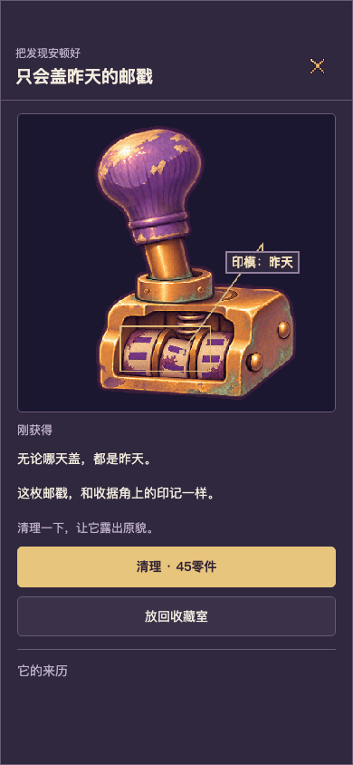


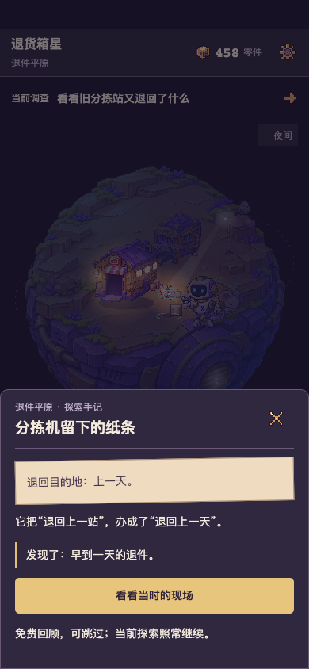
TapTap开发自测 452765 · 0.4.6-chapter.2 · 可刷新续玩。
正常新档第一次120零件，以后继续。独立剧情IDB loststar.review.parcel-story.v1；不自动读取/改写正式v037与备份。
运行源码 43acfc55c4204aaf637e4c2c8452b3cfa7013780
ZIP 12,017,755B / 190文件，SHA256 1f8a525e60f47139582cc5f3eef4ea58a8ac1e037f27e16a058bad1cc7ae27f6。
试玩、存档与交付说明 · 唯一195项权威要求表 · 六物18句实际接入对照
沿用原18整图，用票面日期、同一个退件印记和指向物件的阅读标注连接叙述；阅读标注不是原图裁切放大，也不是新的签收证据。三位居民打招呼立即冒像素爱心，减少动态时静态呈现，不消耗或奖励。
以下来自同一份普通新档、真实时钟、脚本点击查看。没有QA种档、时钟跳转、升级或付费清理；脚本点击不是用户好奇心或留存证据。
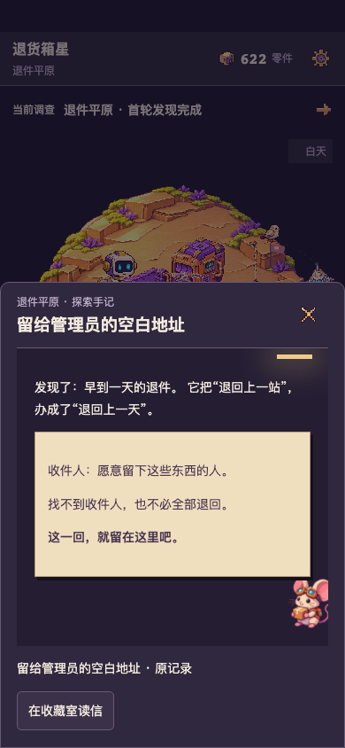
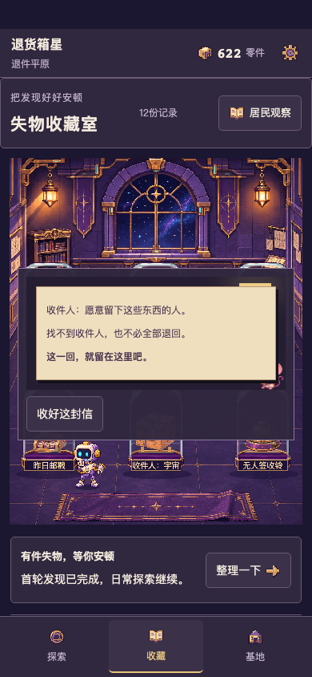
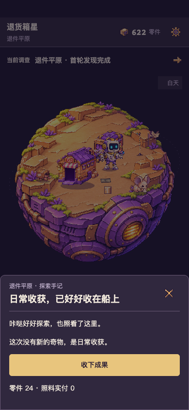
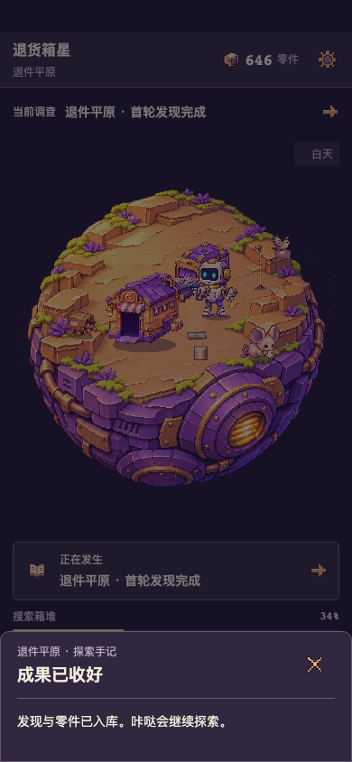
普通路线回归时已拥有原12条，所以这次归航是日常成果。一次离线多物、新发现优先与不提前触发揭晓另有明确QA及浏览器回归，不伪装成这段自然归航的新掉落。
读出票面：请提前后悔。
盖个邮戳：今天的事，昨天再办。
敲敲箱盖：宇宙在家，但不方便签收。
拉出一截：对不起，刚才又粘人了。
打开一层：拆到最后，还是第一层。
轻按铃铛：叮。还是没人签收。
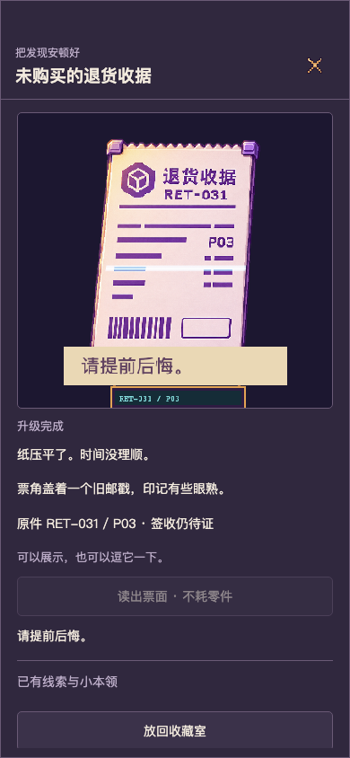
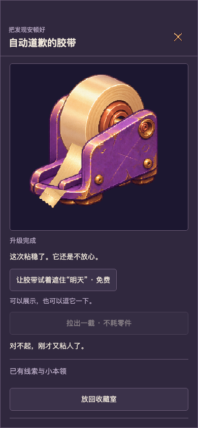
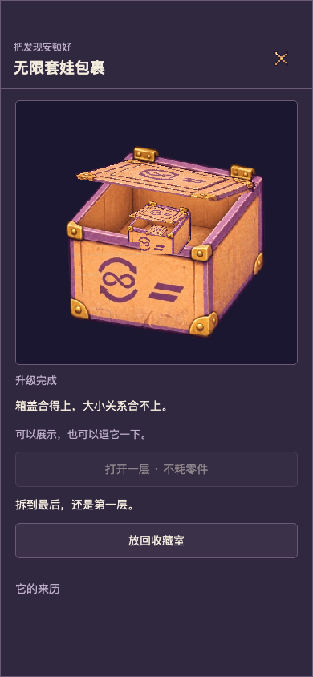

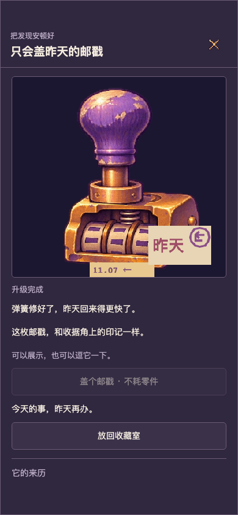
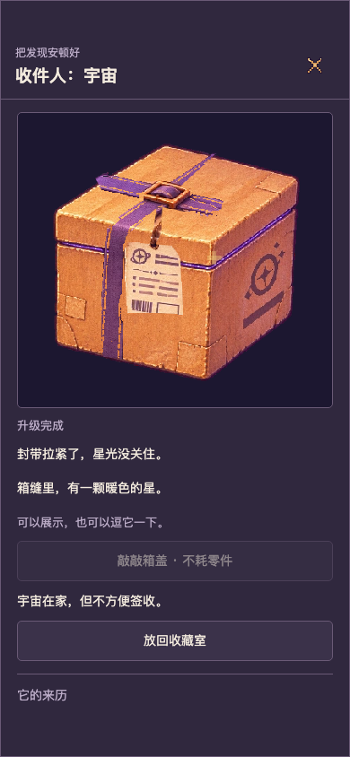
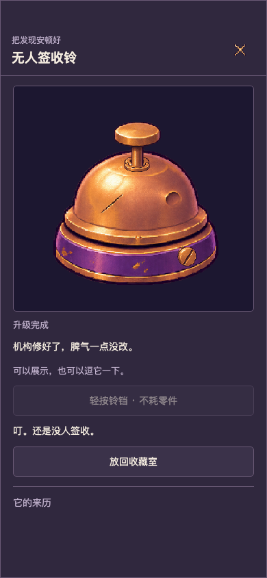
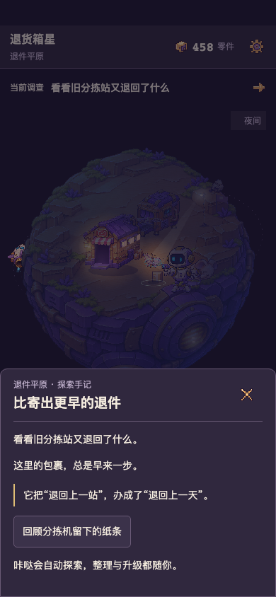
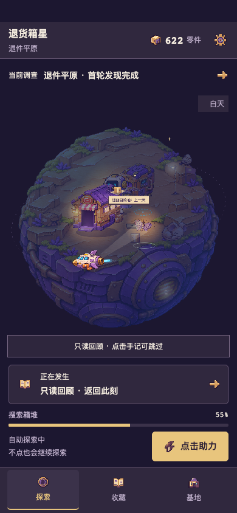
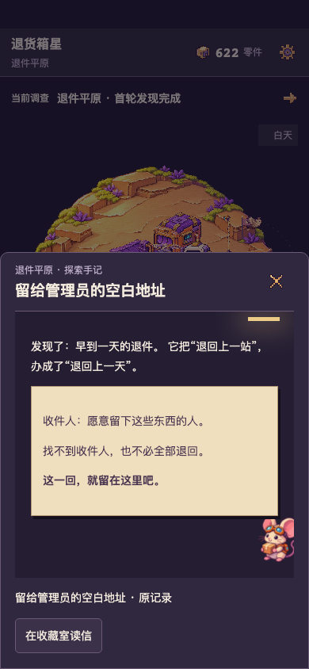
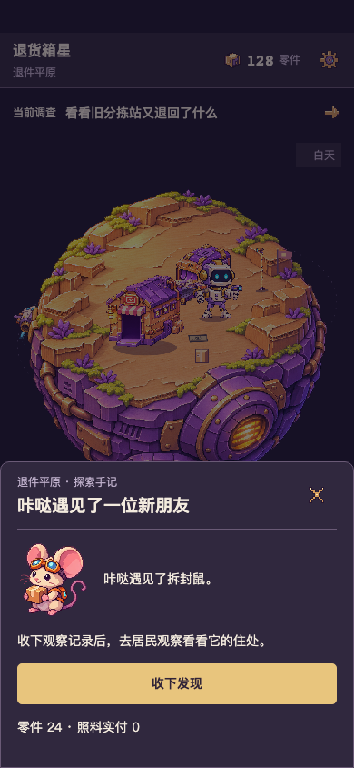
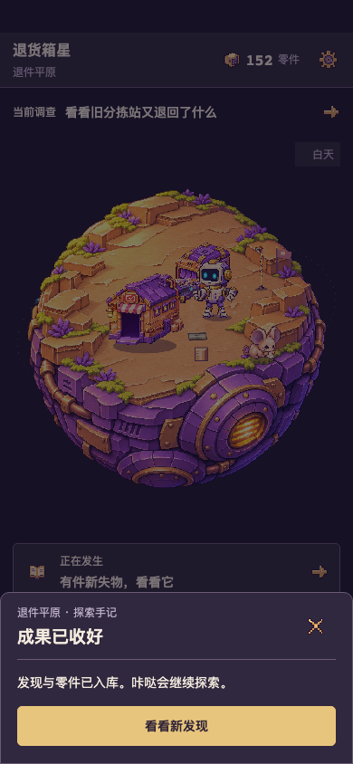
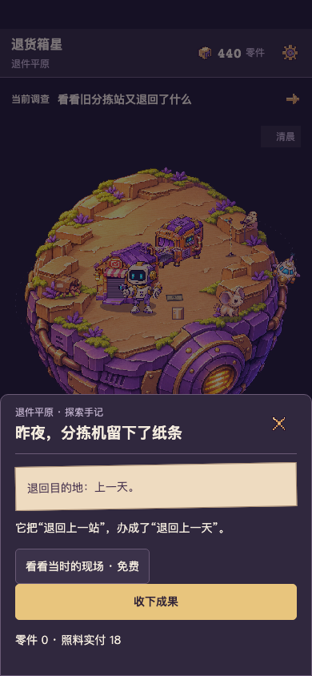
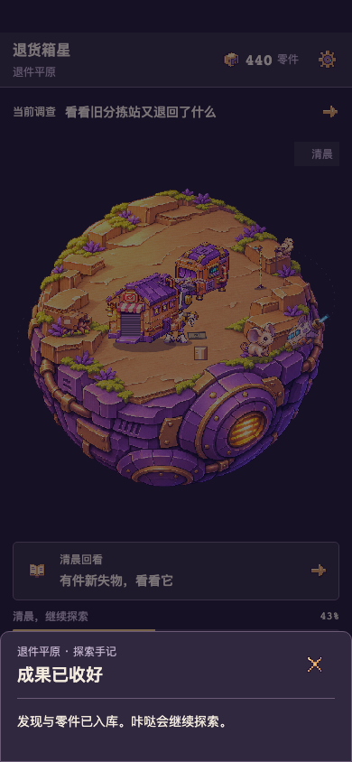
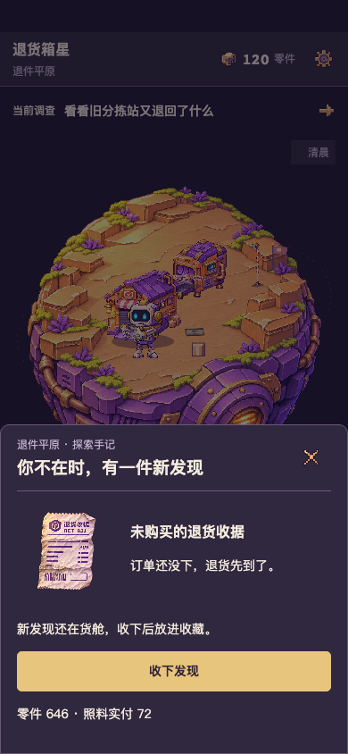
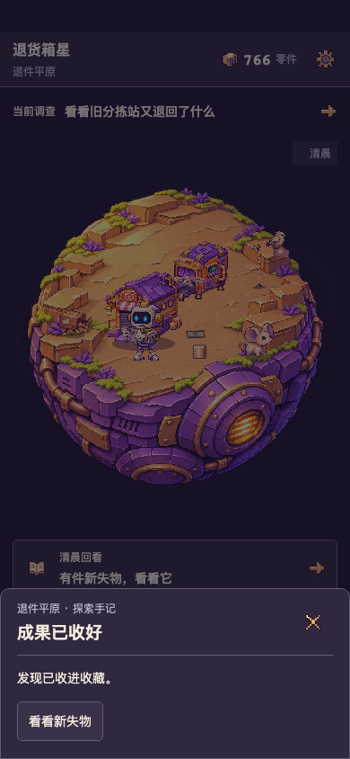
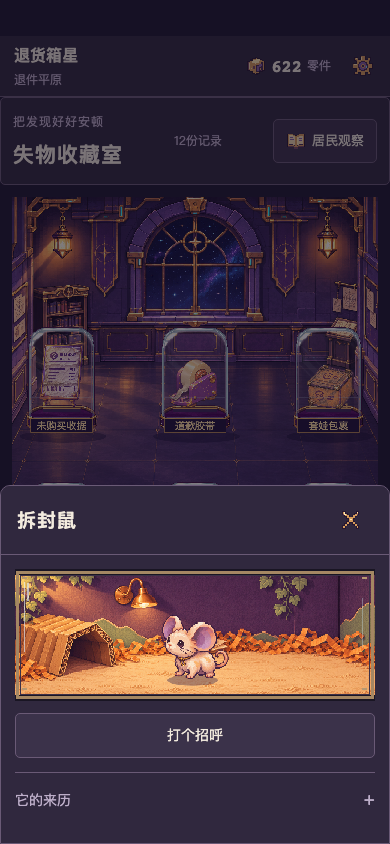
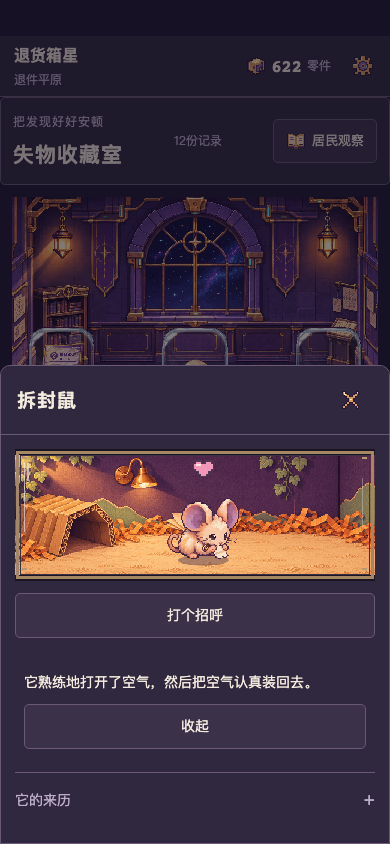
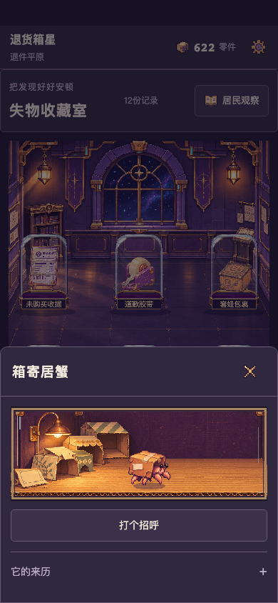
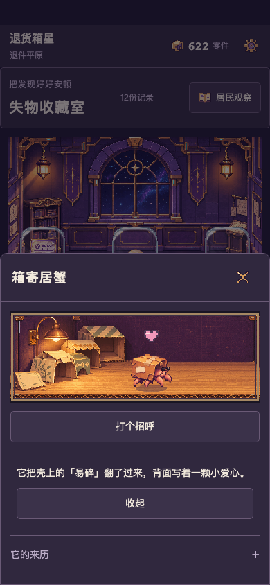
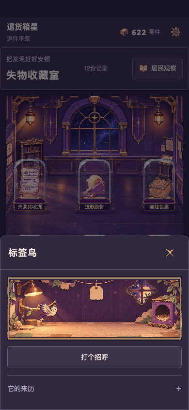
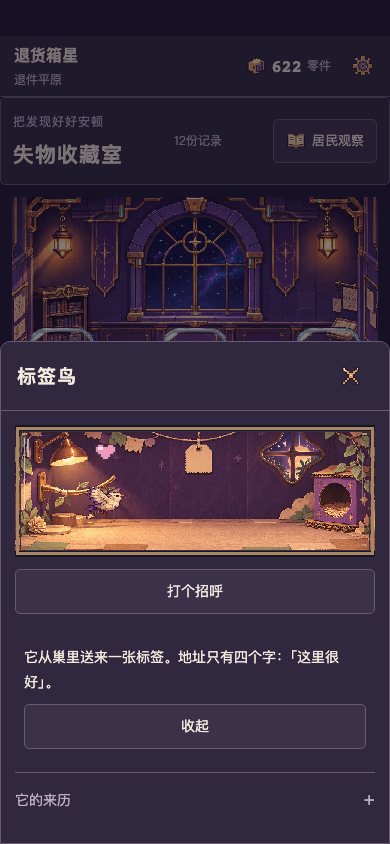
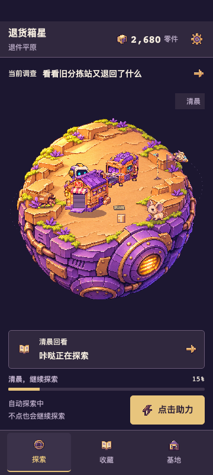
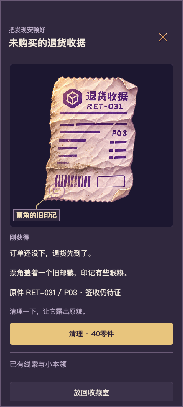
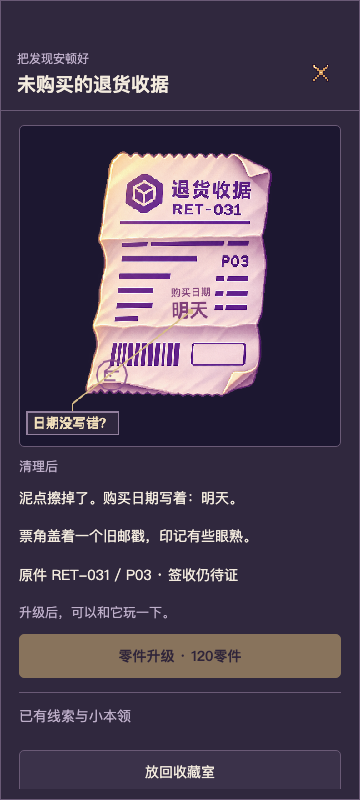
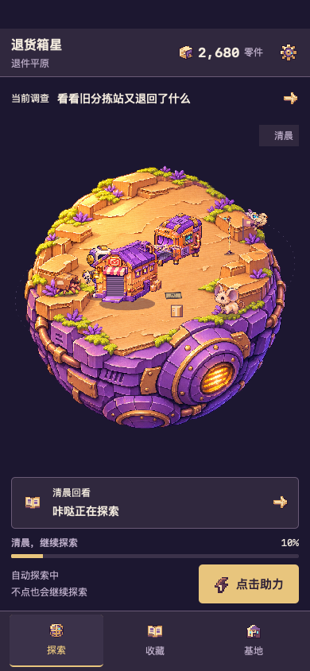
442单测、52首章流程、80原界面流程通过；原游戏完整CI与6组包检查见PR。27,049旧权益复制、三个原数据库及备份逐键不变、清理/升级原价、双标签同清理命令、离线/刷新、防双领、剧情不补签收均有证据。工程通过不等于趣味或美术通过。
真实TapTap手机、宿主安全区、锁屏、声音与长时发热待用户扫码审核。组合梗采用允许的气泡/胶带条，信使用既有动态房间中的轻量纸签，未新做机器人夹信专用帧；不把这些克制表现说成电影级演出。
固定包完整性 · 普通全程、实际账本与32秒离开记录 · QA起点与12段原片 · 旧档与备份隔离 · 8个桌面短测窗口与原值 · 12片原生1倍播放 · 第二次内容/画面复核 · TapTap脱敏回执 · Draft PR当前CI